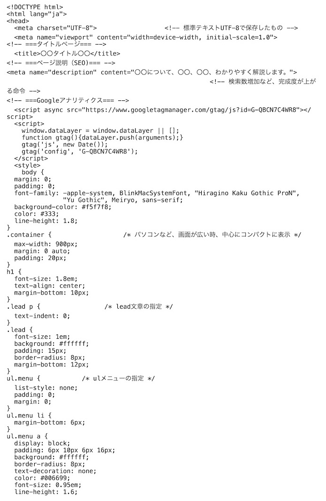
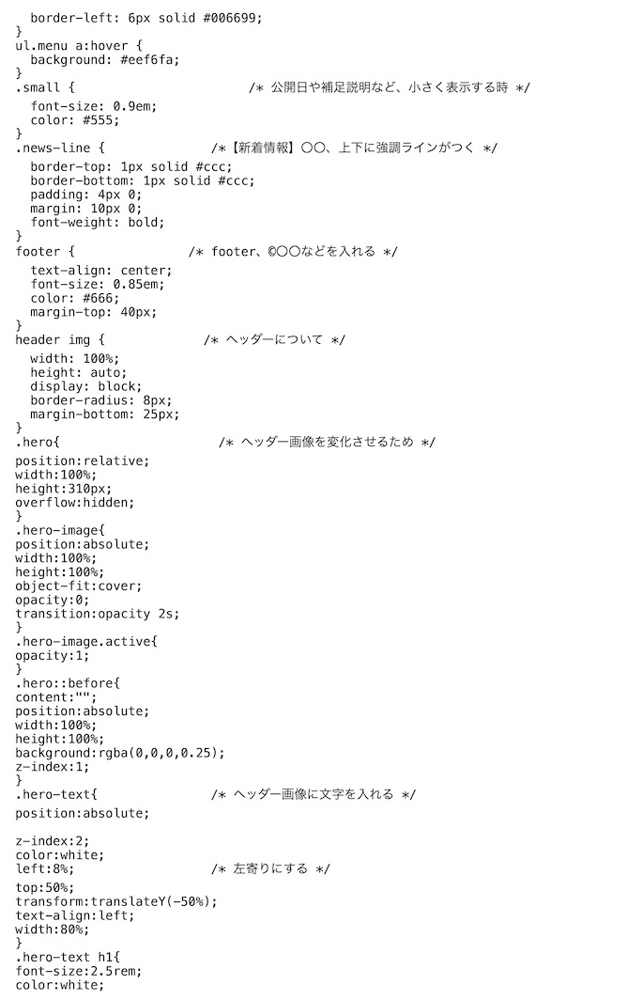
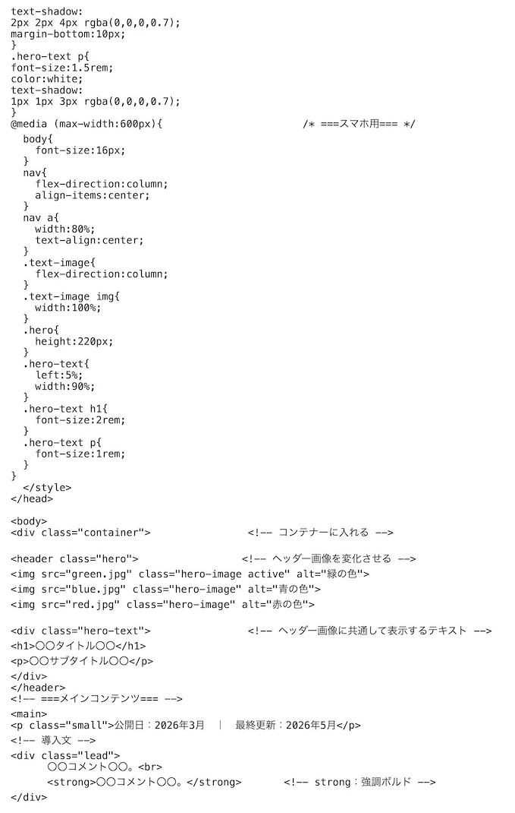
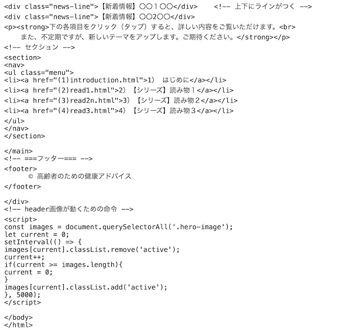
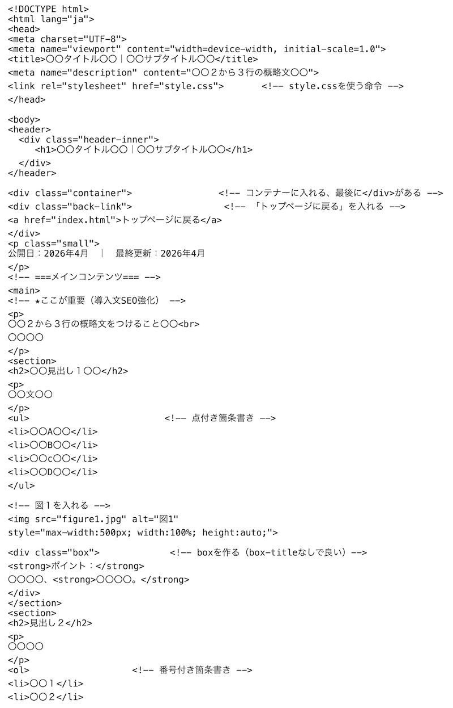
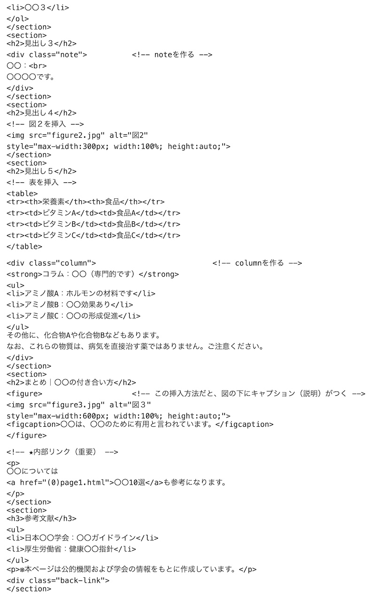
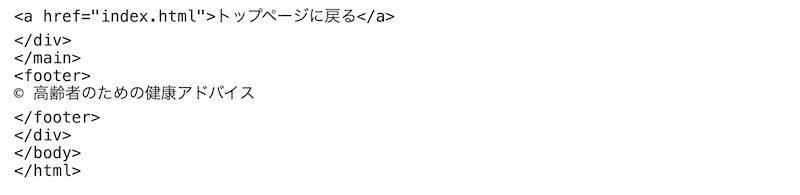
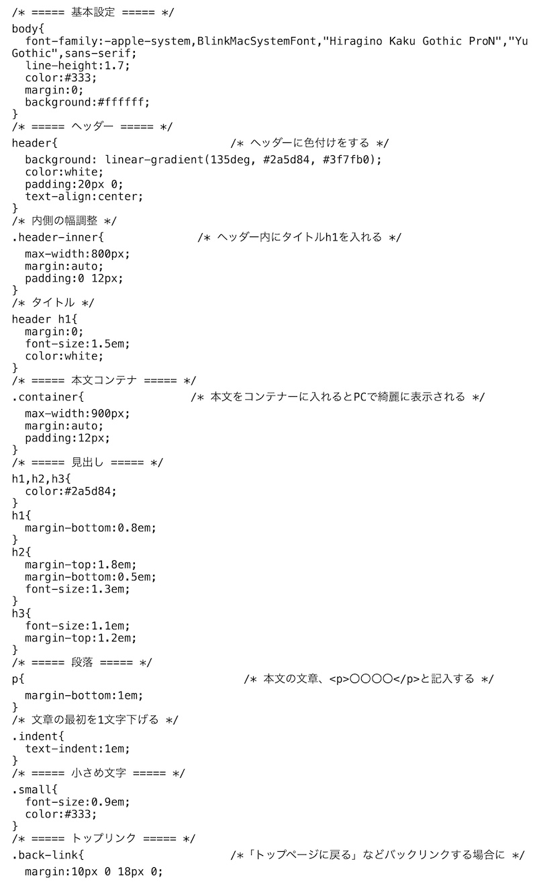
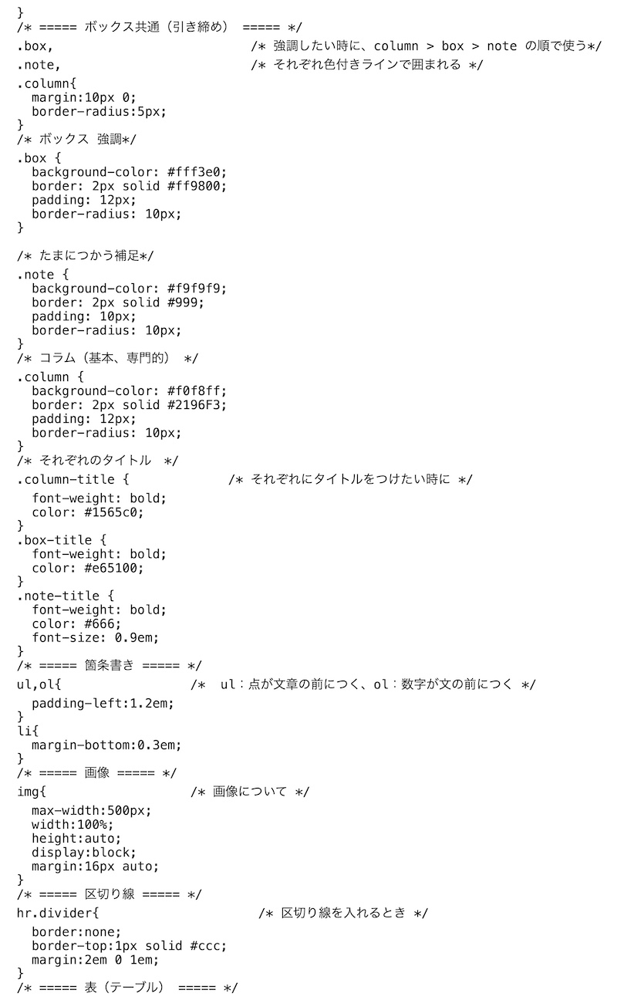
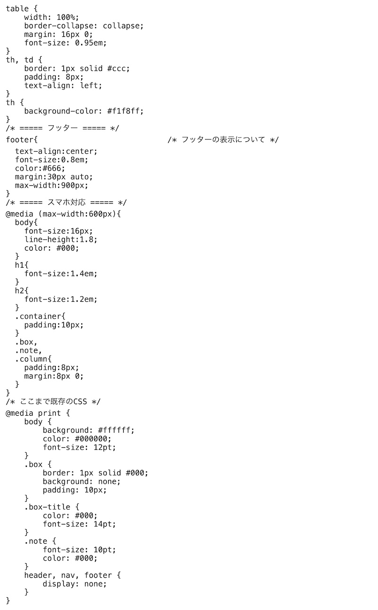

はじめに
「html」言語でホームページを作成する方法を学びます。
第１章 html言語を用いたホームページの雛形
(1) index.htmlの雛形




(2) index.htmlに記入すること
(1) (title)に、「タイトル」を記入する。
(2) (meta name="description" content="〇〇、〇〇。")
SEDであり、検索数増加のために。
(3) (header class="hero")に、変化する「ヘッダー画像」を入れる。
(4) (div class="hero-text")に、ヘッダー画像に共通して表示するテキストを入れる。
例えば、(h1)〇〇〇〇(/h1)と、(p)〇〇サブタイトル〇〇(/p)など。
(5) (main)の（div class="lead"）に、metaの文章を入れる。
(6) index.htmlの画面に、「メニュー」を作るなら、(nav)(ul class="menu")に、メニューを作る。
(7) (footer）に、©️〇〇などを入れる。
(3) リンクページの雛形



(4) リンクページに記入するための注意点
(1) 図を入れる＝(img src="figure1.jpg" alt="図１" style="max-width:500-800px; width:100%; height:auto;")で。
(2) コラム、ボックス、ノートの作り方＝(div class="box")、(strong)〇〇(/strong)、(p)を入れない方が良い。(/div)で終わる。
(3) 番号付き箇条書き＝(ol)、(li)〇〇１(/li)、(li)〇〇２(/li)、(/ol)と書く。
(4) 点付き箇条書き＝(ul)
(5) 表の作り方＝（table）、(tr)(th)〇〇(/th)(th)〇〇(/th)(/tr)表題、(tr)(td)〇〇(/td)(td)〇〇(/td)(/tr)内容など、(/table)で終わる。
(6) 内部リンクする場合＝(a href="---.html")〇〇(/a)も参考になります。など。
第２章 Style.cssの雛形



第３章 その他の注意事項
(1) ファイル名には「日本語」を使わない。（サーバーで文字化けする可能性あり）
(2) 画像名に空白を入れない。（good_sleep.jpgなどに！）
(3) 拡張子を統一（.jpg、.png、.html、.cssなど）
(4) 画像サイズは「横幅基準」で管理する。（ヘッダー:1200px前後、通常画像：600-800px、図表：500-700px）
(5) htmlの文法チェックには「W3C Validator」、cssチェックには「W3C CSS Validator」を使いましょう。
(6) 公開日等、月日の更新を忘れないように。
メモ
・ GitHubは無料で利用可能であり、容量は1GB程度。
・ Html、css、javaScriptをそのまま公開できる。
・ GitHubがバックアップの役割も果たしてくれる。